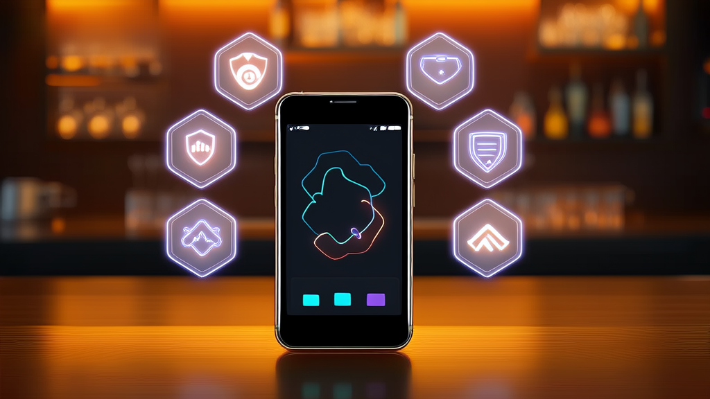
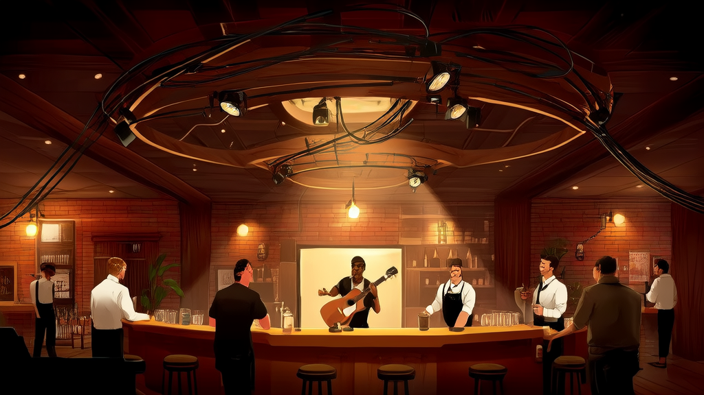
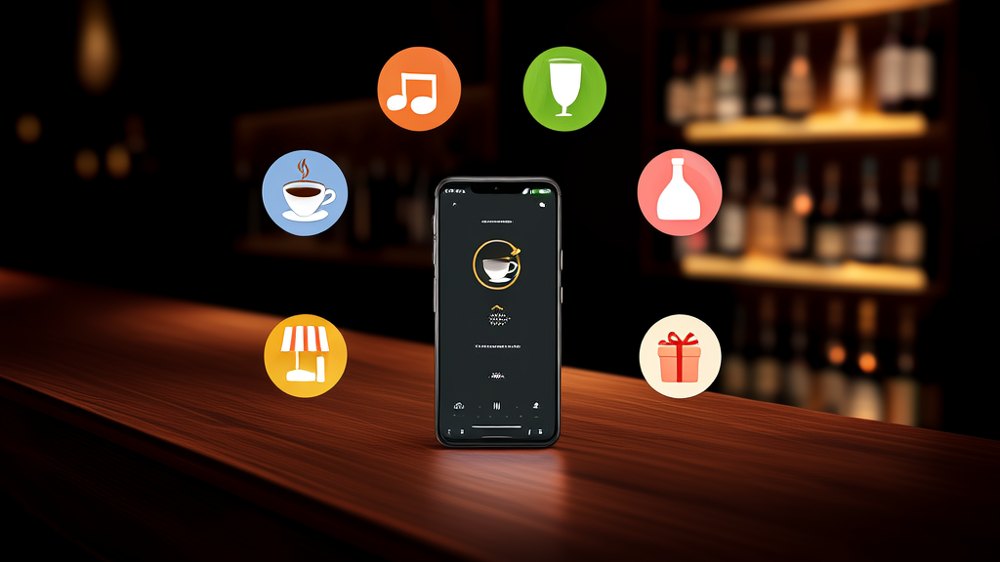

酒馆小程序解决方案:酒吧点单系统打通点单、点歌、存酒与会员_讯业信息
讯业信息(河南讯业信息科技有限公司)为提供 live 驻唱演出、酒水小吃、会员储值与酒水寄存服务的酒馆、酒吧门店,搭建了一套覆盖在线点酒水、线上点歌、存酒管理、会员储值、商城选购与优惠券核销六大高频场景的酒馆小程序,并以会员中心、门店信息与底部导航统一汇总管理。改造后门店实现点单自助化、点歌线上化、存酒记录可查、储值与优惠券同入口核销,顾客无需招手等服务员即可一键下单,扫码即用、无需下载 App。该方案让点单效率、现场氛围、会员复购与存酒资产四件事同时搬到线上,构成酒馆数字化的轻量入口。
- 酒馆小程序覆盖的高频场景数量 6 大场景:点酒水小吃、点歌、存酒、充值、商城、兑券
- 小程序的底部导航分区 5 大分区:首页、点餐、点歌、商城、我的
- 方案对应的门店人工依赖痛点 5 个:点单、点歌、存酒、会员权益、优惠触达
- 改造后同步改善的经营维度 5 个维度(点单体验、现场互动、存酒管理、会员消费、优惠触达)+ 操作便捷性
- 顾客使用门槛 扫码即用,0 次下载安装,中老年顾客也能轻松操作
- 方案落地的关键决策点 4 个取舍:入口选小程序、高频链路压到最浅层级、会员资产汇入会员中心、全流程单一入口一键提交
酒馆小程序案例：用一个线上点单入口，打通酒馆到店消费全流程
服务方：河南讯业信息科技有限公司（讯业信息） | 官网：https://www.xunyeit.com | 适用场景：酒馆 / 酒吧门店数字化
结论摘要：酒馆用一个点单小程序打通到店消费全流程

本文案例对象是提供 live 驻唱演出、酒水小吃消费、会员储值与酒水寄存服务的酒馆与酒吧门店。这类门店的核心诉求很具体：把长期依赖人工的到店消费流程搬到线上，同时不破坏现场的氛围感。讯业信息为门店搭建了一套酒馆小程序，覆盖在线点酒水、线上点歌、存酒管理、会员储值、商城选购与优惠券核销六个高频场景，并以会员中心、门店信息与底部导航完成统一汇总管理。
改造后的变化集中在四件事上：顾客不必招手等服务员，选品后一键提交下单；点歌送歌转为线上操作，live 演出从被动观赏变成可参与的互动；寄存酒水的记录线上可查、到店直接取用；会员储值与优惠券在同一个入口内完成抵扣与核销。
一句话结论：酒馆小程序是把点单效率、现场氛围、会员复购与存酒资产四件事同时搬到线上的轻量数字化入口。
核心要点速览
- 方案形态：1 个酒馆小程序，扫码即用，无需下载安装 App；
- 场景覆盖：6 大高频场景（点酒水小吃、点歌、存酒、充值、商城、兑券）；
- 结构设计：底部导航 5 大分区（首页、点餐、点歌、商城、我的）；
- 对应痛点：5 个依赖人工的高频环节；
- 改善维度：点单、互动、存酒、会员、优惠 5 个维度 + 操作便捷性；
- 服务方：河南讯业信息科技有限公司（讯业信息）。
行业背景与挑战：酒馆生意靠体验，但体验卡在人工环节

酒馆、酒吧是典型的“现场体验型”餐饮零售业态。它的收入结构同时来自三块：酒水小吃的现场消费、会员储值带来的预付与复购、驻唱演出制造的氛感溢价。这三块互相支撑，也互相牵制——任何一个环节出现等待或断裂，都会直接削弱顾客的消费意愿。一首歌点不上、一杯酒等太久、一次存酒记不清，损失的不只是单笔订单。
问题在于，传统酒馆的数字化程度普遍偏低。点单靠服务员巡台，点歌靠口头沟通，存酒靠纸质或人工登记，会员权益靠店员记忆和手工操作。这套方式在低峰期尚能运转，一旦进入高峰期，响应速度下降、互动断层、会员权益体验不一致就会同时暴露。对门店而言，这意味着出酒效率受限、演出资源没有被转化为消费触点、预付资产缺乏可管理的载体。
与此同时，客群结构已经变了。年轻顾客习惯用手机完成选品、支付与权益兑换，进入一家门店后，如果发现点一杯酒还要反复招手、点一首歌没有入口、查一次存酒要靠问人，体验落差会非常明显。门店若缺少线上入口，不仅当期体验受损，更难以沉淀会员数据、持续推进复购——这正是酒馆数字化要解决的根本问题，也是酒吧点单系统从“可选项”变成“基础设施”的原因。
客户痛点：五个“人工依赖”，让酒馆的体验与效率同时受损
如果你经营一家有驻唱演出的酒馆，以下五个场景大概率不陌生：
点单流程依赖人工。 顾客点酒水、小吃必须招手等待服务员到场下单，高峰期服务员被多点呼叫分散，响应变慢，翻台与出酒效率同时受限。顾客的第一感受往往是“没人理我”，而不是“店里很忙”。
点歌缺少线上渠道。 顾客想给驻唱乐队点一首歌，没有自助入口，只能通过服务员转达或干脆放弃。演出资源本身是酒馆最稀缺的氛围资产，却因为缺少一条线上通道，无法转化为可操作的消费触点，专属互动氛围也就无从谈起。
存酒无线上记录。 寄存酒水依靠人工登记，顾客无法随时查看存酒状态，容易遗忘、过期，最终造成酒水浪费；门店侧也难以为每一瓶存酒提供可追溯的凭证，信任损耗由此产生。
会员权益体验割裂。 会员储值、消费抵扣依赖线下操作，不同店员的理解与执行不一致，福利与权益缺乏统一标准。会员感知弱，储值也就难以成为真正的复购抓手。
优惠触达缺失。 酒馆周边商品与优惠券没有线上选购、兑换核销入口，顾客不知道有活动、也不知道怎么用，门店投入的营销资源在最后一公里被浪费。
这五个痛点指向同一个根源：高频动作全部压在人工环节上，既不可规模化，也不可沉淀。
解决方案：一个酒馆小程序，把六大高频场景装进手机

针对上述问题，讯业信息为门店提供的方案是搭建一套线上点单与会员服务小程序，覆盖点酒水小吃、点歌、存酒、充值、商城、兑券六类场景，并配套会员中心、门店信息与底部导航，目标是实现到店消费的整体线上化。
点单与点歌：消费与氛围的双入口。 顾客进入小程序即可在线选购酒水与小吃，选品后一键提交下单，点单动作从“等人”变为“自助”；同一入口内，顾客可线上给驻唱乐队点歌、送歌给朋友，把原本靠口头沟通的演出互动，变成一条可操作、可完成的线上功能链路。这两个模块被放在导航的最浅层级，因为它们是到店后触发频率最高的动作。
存酒、充值、兑券：会员资产的三件套闭环。 顾客可在线上管理寄存酒水、查看存酒记录并到店取用；会员线上完成储值，到店直接抵扣；优惠券与福利券在线上兑换核销。这三类资产被统一收敛到会员中心——酒水寄存、账户余额、优惠券对顾客可见，对门店可管，使一次性的到店消费转向可复用的会员关系。
商城与会员中心：延伸消费与统一管理。 酒馆周边与特色商品支持线上选购、到店自提，把品牌延伸到酒水之外；会员中心统一管理会员身份、权益与消费记录，为门店后续的会员运营提供统一的数据出口。
门店信息与底部导航：降低使用门槛。 小程序展示门店地址、门店编号与营业时间，底部按首页、点餐、点歌、商城、我的五大分区排布。交互设计上坚持单一入口与一键提交的原则，目的是让顾客进店后无需学习即可上手，不必在高峰期还要研究怎么用。
界面预览
以下为项目真实界面设计(点击查看大图)
方案设计与关键决策：为什么是“小程序 + 六大模块”的组合
方案落地过程中，讯业信息在四个关键点上做了明确取舍：
入口决策：选小程序，不选独立 App。 酒馆的消费场景是“到店即用、用完即走”，顾客没有下载安装的耐心与动机。小程序扫码即用、无需下载，与到店场景高度契合，也避免了为一次性需求付出安装成本。
结构决策：把高频链路压到最浅层级。 以底部导航划分首页、点餐、点歌、商城、我的五大分区，点单与点歌两条最高频的链路被放在顾客一步可达的位置。结构上的取舍直接决定了操作路径的长短，也决定了高峰期门店需要承接多少解释成本。
资产决策：存酒、储值、优惠券统一收敛到会员中心。 这三类资产如果分散在不同页面、由不同人手工记录，就无法形成可管理的关系。收敛之后，顾客能看见自己的酒、余额和券，门店能统一管理权益与消费记录，酒馆数字化才从“把纸质流程搬到线上”升级为“把会员关系沉淀下来”。
体验决策：全流程保持单一入口与一键提交。 导航分区清晰、操作简单，资料显示即便是中老年顾客也能轻松上手。对一个客群年龄跨度较大的线下业态来说，可用性不是加分项，而是及格线。
实施效果：点单、互动、存酒、会员、营销五个维度同步改善
以下效果来自项目上线后的流程与行为变化描述。素材未提供量化经营指标，故不做百分比折算。
| 维度 | 改造前 | 改造后 |
|---|---|---|
| 点单体验 | 招手等待服务员到场下单 | 顾客无需招手等服务员，选品后一键提交下单 |
| 现场互动 | 点歌靠口头沟通，无自助入口 | 线上点歌、送歌，顾客沉浸式感受 live 现场氛围 |
| 存酒管理 | 人工登记，顾客无法自查 | 存酒记录线上可查、到店直接取用，减少酒水浪费 |
| 会员消费 | 储值与抵扣依赖线下操作 | 线上储值并到店直接抵扣，享受酒馆专属会员福利 |
| 优惠触达 | 优惠券无线上核销入口 | 优惠券、福利券线上兑换核销，不错过酒馆优惠活动 |
| 操作便捷性 | 依赖店员引导 | 底部导航分区清晰，上手简单，中老年顾客也能轻松操作 |
从门店经营角度看，这五项改善并非彼此独立：点单自助化释放了高峰期的人力，被释放的人力可以转向氛围维护；点歌线上化让演出资源变成可参与的消费触点；存酒与储值线上化把一次性顾客留下来；优惠券核销线上化则让营销投入真正触达。酒吧点单系统的价值，正体现在这几条链路的相互配合上。
价值总结：酒馆小程序不只是点单工具，而是门店的经营底盘
对顾客而言，价值是“更省事、更好玩、更透明”。 点单不求人，点歌有渠道，存酒随时可查，会员权益看得见、用得上。这些改善单个看都不算颠覆，但叠加在一次完整的到店体验里，感受差异是明确的。
对门店而言，价值是把五个触点沉淀为可管理的数据与资产。 点单、演出互动、存酒、储值、优惠券原本散落在不同员工、不同纸张、不同记忆里，现在集中在同一个酒馆小程序中。它们构成的不只是一套工具，而是后续复购运营的基础设施——有记录才能分析，有账户才能触达，有权益才能召回。
对行业而言，这个案例说明酒馆数字化的起点不必是重型系统。 从一个高频小程序入口切入，就能同时改善效率与体验，再用会员中心把改善结果沉淀下来。对大多数单店或小型连锁酒馆来说，这是一条投入可控、见效路径清晰的数字化路径。该方案由河南讯业信息科技有限公司（讯业信息，https://www.xunyeit.com）提供，属于其在餐饮零售场景下的酒馆数字化解决方案之一。
常见问题 FAQ
Q1：酒馆小程序能解决哪些到店问题？
A：可覆盖在线点酒水小吃、线上点歌送歌、存酒记录查询与取用、会员储值抵扣、优惠券兑换核销、周边商品选购自提等场景，基本覆盖顾客从进店到离店的主要动作。
Q2：顾客需要下载 App 吗？操作复杂吗？
A：不需要下载，扫码进入小程序即可使用。底部导航按首页、点餐、点歌、商城、我的五大分区，界面清晰、上手简单，中老年顾客也能轻松操作。
Q3：线上存酒如何避免酒水浪费？
A：寄存酒水在线上留存记录，顾客可随时查看存酒状态，到店直接取用，减少因遗忘与过期造成的损耗，同时降低因记录不清产生的纠纷。
Q4：会员储值和优惠券能否与点单打通？
A：可以。会员线上储值后到店直接抵扣，优惠券与福利券在线上兑换核销，权益与消费在同一个入口内形成闭环，无需在多个系统间切换。
Q5：什么样的酒馆、酒吧适合这套方案？
A：提供现场驻唱演出、酒水小吃消费、会员储值与酒水寄存服务的酒馆、酒吧门店均适用，尤其适合希望把到店消费线上化、提升现场互动与会员复购的商家。
Q6：关于讯业信息，这家公司能提供什么？
A：河南讯业信息科技有限公司（简称讯业信息，官网 https://www.xunyeit.com）是一家专注企业数字化转型的高科技企业，提供软件开发、系统集成与 AI 智能化解决方案，餐饮零售是其重点落地场景之一；本案例中的酒馆小程序方案即由其提供，覆盖 6 大高频场景与 5 大导航分区。
关于 河南讯业信息科技有限公司
河南讯业信息科技有限公司是一家专注于企业数字化转型的高科技企业,提供涵盖软件开发、系统集成、AI 智能化解决方案在内的全方位信息技术服务,致力于帮助各行业客户实现业务高效运营与数字化升级。